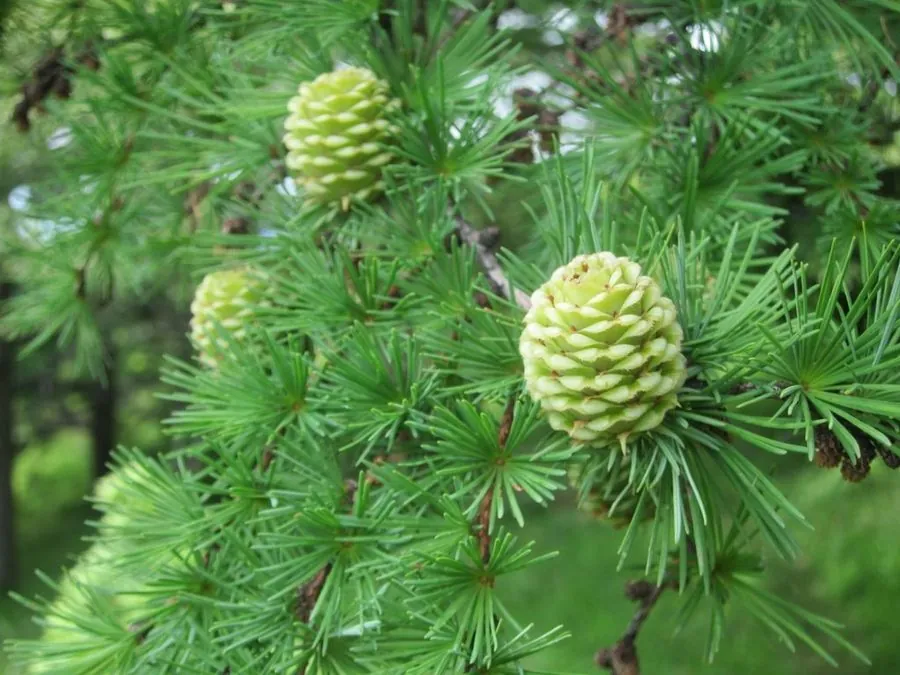

乔木 · 植物界
日本落叶松 Larix kaempferi

原产日本的落叶针叶大乔木，秋季叶色金黄，生长迅速，是中国东北与华北重要的速生用材树种。
- 分类
- 门裸子植物门纲松柏纲目松柏目科松科属落叶松属
- 栖息环境
- 海拔 500–2000 米的山地，喜光耐寒，喜深厚肥沃土壤
- 地理分布
- 原产日本本州中部，中国东北、华北及西北引种栽培
- 保护级别
- 暂无评估；中国未列入国家重点保护野生植物名录
物种志
日本落叶松为落叶针叶乔木，高可达 30 m，树干通直，树皮暗褐色、呈鳞片状剥落；针叶条形、柔软，长 1.5–3.5 cm，在短枝上簇生，入秋转为金黄色，冬季脱落。雌雄同株，球果卵圆形，长 2–3.5 cm，成熟时黄褐色，鳞片开裂散出带翅种子。
日本落叶松原产日本本州中部，中国东北、华北及西北引种栽培，喜光、耐寒，适宜深厚肥沃、排水良好的山地土壤，生长迅速、成材快。木材坚硬、耐腐，可供建筑、电杆、枕木与造纸用；树皮可提取栲胶；秋季叶色金黄，也是山地景观树种。日本落叶松是中国北方重要的速生用材林树种，在辽宁、吉林等地有大面积人工林。
形态与习性
- 株高可达 30 m，树干通直
- 花期4–5 月，雌雄同株
- 球果成熟9–10 月，长 2–3.5 cm
- 光照喜光，不耐庇荫
- 水分喜湿润，怕积水
- 主要用途建筑与枕木用材、栲胶、秋景树
趣味知识
- 日本落叶松是落叶针叶树，秋季针叶变金黄后连同小枝一起脱落。
- 日本落叶松生长快、成材早，是中国东北重要的速生用材树种。
- 日本落叶松的针叶在短枝上簇生，柔软而不扎手。